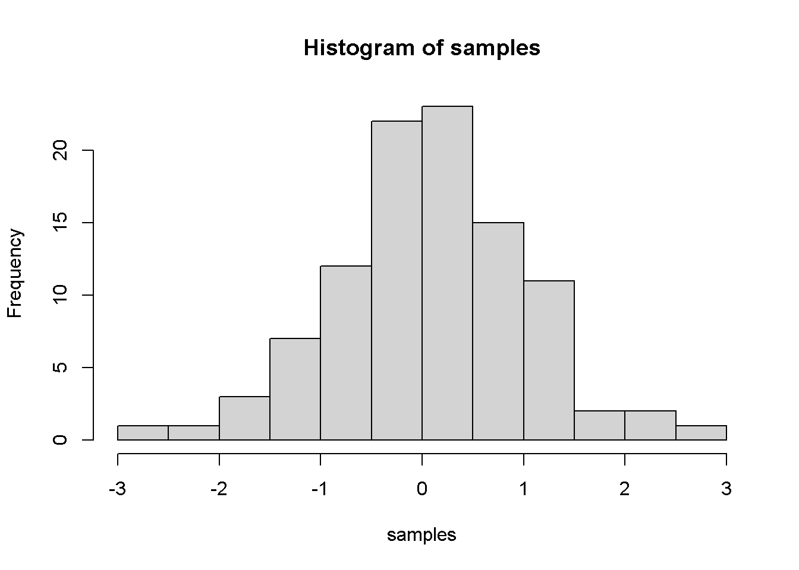

title: “REPORT OF DATA-SCIENCE CLASS” author: “Santiago Pulido Guerrero” date: “23-11-2020” output: html_document: toc: true toc_float: true collapsed: false number_sections: true toc_depth: 3 #code_folding: hide — -g
CHAPTER 2: INTRO TO THE TIDYVERSE
#CHALLENGE 1: ANALYSIS OF SALES BY PLACE AND YEAR
Last compiled: 2020-11-24
- Analysis of the sales by location and by year and location considering the 12 states of Germany and using bar plots.
# Data Science at TUHH ------------------------------------------------------
# SALES ANALYSIS ----
# 1.0 Load libraries ----
library(ggplot2)
library(tidyverse)
library(readxl)
library("writexl")
# 2.0 Importing Files ----
bikes_data <- read_excel(path = "D:/data-science/DS_Data-Science/00_data/01_bike_sales/01_raw_data/bikes.xlsx",sheet = NULL)
bikeshops_data <- read_excel(path = "D:/data-science/DS_Data-Science/00_data/01_bike_sales/01_raw_data/bikeshops.xlsx",sheet = NULL)
orderlines_data <- read_excel(path = "D:/data-science/DS_Data-Science/00_data/01_bike_sales/01_raw_data/orderlines.xlsx",sheet = NULL)
# 3.0 Joining Data ----
bikes_total_dataA = left_join(orderlines_data,bikes_data, by = c("product.id"="bike.id"))
bikes_total_dataB = left_join(orderlines_data,bikeshops_data, by = c("customer.id"="bikeshop.id"))
bike_orderlines_wrangled = left_join(bikes_total_dataA,bikes_total_dataB,by = NULL)
# 5.0 Wrangling Data ----
bike_orderlines_wrangled_tbl <- bike_orderlines_wrangled %>% separate(col = 'location',into = c("City","State"),sep = ",")%>%
mutate(total.price = price*quantity)%>%
select(order.id, contains("order"),contains("model"),contains("location"),price, quantity, total.price,everything()) %>%
rename(bikeshop = name) %>% set_names(names(.) %>% str_replace_all("\\.", "_"))
# 6.0 Business Insights ----
# 6.1 States with the highest revenue ----
# Step 1 - Manipulate
sales_by_loc_tbl <- bike_orderlines_wrangled_tbl %>% separate(col = "order_date",into = c("order_year","order_month","order_day"),sep = "-") %>%
group_by(State) %>% summarize(total_sales = sum(total_price))%>%
mutate(sales_in_euros = scales::dollar(total_sales, big.mark = ".",decimal.mark = ",",prefix = "",suffix = "\u20ac"))
sales_by_loc_year_tbl <- bike_orderlines_wrangled_tbl %>% separate(col = "order_date",into = c("order_year","order_month","order_day"),sep = "-") %>%
group_by(order_year,State) %>% summarize(total_sales = sum(total_price))%>%
mutate(sales_in_euros = scales::dollar(total_sales, big.mark = ".",decimal.mark = ",",prefix = "",suffix = "\u20ac"))
# Step 2 - Visualize
sales_by_loc_tbl %>% ggplot(aes(x = State,y = total_sales))+ theme(axis.text.x = element_text(angle = 45, hjust = 1)) +
geom_col(fill = "#2DC6D6") + geom_label(aes(label = sales_in_euros)) + geom_smooth(method = "lm", se = FALSE) +
scale_y_continuous(labels = scales::dollar_format(big.mark = ".",decimal.mark = ",",prefix = "",suffix = "\u20ac")) +
labs(
title = "Revenue by state",
subtitle = "Highest revenues",
x = "", # Override defaults for x and y
y = "Revenue in euros \u20ac"
)
ggsave("sales_by_loc_tbl.png", height = 30, width = 35,units = "cm")
# 6.2 Sales by Year and Category 2 ----
# Step 2 - Visualize
sales_by_loc_year_tbl %>% ggplot(aes(x = order_year,y = total_sales, fill = State))+ theme(axis.text.x = element_text(angle = 90, hjust = 1)) +
geom_col() + facet_wrap(~ State) + scale_y_continuous(labels = scales::dollar_format(big.mark = ".",decimal.mark = ",",prefix = "",suffix = "\u20ac")) +
labs(
title = "Revenue by state",
subtitle = "Highest revenues",
fill = "Sales by states"
)
ggsave("sales_by_loc_year_tbl.png", height = 35, width = 35,units = "cm")
# 7.0 Writing Files ----
#install.packages("writexl")
library("writexl")
# 7.1 XLSX ----
sales_by_loc_tbl %>% write_xlsx("D:/data-science/DS_Data-Science/00_data/01_bike_sales/02_wrangled_data/sales_by_loc.xlsx")
sales_by_loc_year_tbl %>% write_xlsx("D:/data-science/DS_Data-Science/00_data/01_bike_sales/02_wrangled_data/sales_by_loc_year.xlsx")
# 7.2 CSV ----
sales_by_loc_tbl %>% write_csv("D:/data-science/DS_Data-Science/00_data/01_bike_sales/02_wrangled_data/sales_by_loc.csv")
sales_by_loc_year_tbl %>% write_csv("D:/data-science/DS_Data-Science/00_data/01_bike_sales/02_wrangled_data/sales_by_loc_year.csv")
# 7.3 RDS ----
sales_by_loc_tbl %>% write_rds("D:/data-science/DS_Data-Science/00_data/01_bike_sales/02_wrangled_data/sales_by_loc.rds")
sales_by_loc_year_tbl %>% write_rds("D:/data-science/DS_Data-Science/00_data/01_bike_sales/02_wrangled_data/sales_by_loc_year.rds")CHALLENGE 2:
You can add more headers by adding more hashtags. These won’t be put into the table of contents
third level header
Here’s an even lower level header
My second post (note the order)
Last compiled: 2020-11-24
I’m writing this tutorial going from the top down. And, this is how it will be printed. So, notice the second post is second in the list. If you want your most recent post to be at the top, then make a new post starting at the top. If you want the oldest first, do, then keep adding to the bottom
Adding R stuff
So far this is just a blog where you can write in plain text and serve your writing to a webpage. One of the main purposes of this lab journal is to record your progress learning R. The reason I am asking you to use this process is because you can both make a website, and a lab journal, and learn R all in R-studio. This makes everything really convenient and in the same place.
So, let’s say you are learning how to make a histogram in R. For example, maybe you want to sample 100 numbers from a normal distribution with mean = 0, and standard deviation = 1, and then you want to plot a histogram. You can do this right here by using an r code block, like this:
samples <- rnorm(100, mean=0, sd=1)
hist(samples)
When you knit this R Markdown document, you will see that the histogram is printed to the page, along with the R code. This document can be set up to hide the R code in the webpage, just delete the comment (hashtag) from the cold folding option in the yaml header up top. For purposes of letting yourself see the code, and me see the code, best to keep it the way that it is. You’ll learn that all of these things and more can be customized in each R code block.